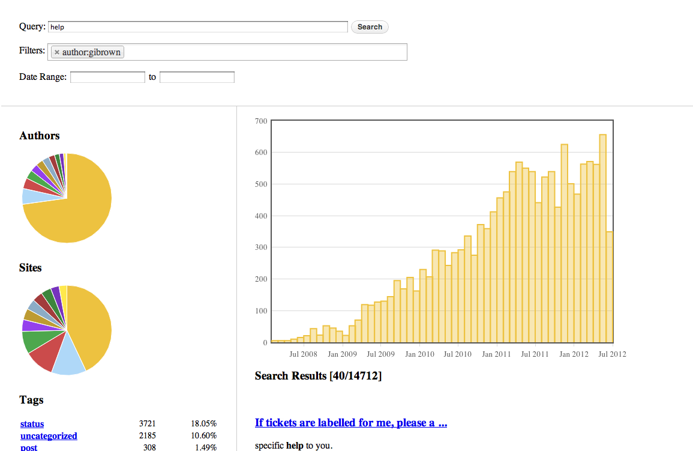

es-backbone.js Examples
The es-backbone.js library is built on backbone.js and contains:
- Search Results Model: esbbSearchResultsModel
- Search Query Model: esbbSearchQueryModel
- View for search query input: esbbSearchBarView
- View for displaying search results: esbbSearchResultsView
- View for a timeline of search results (date histogram facet): esbbSearchFacetTimelineView
- View for a pie chart of search results (term and range facets): esbbSearchFacetPieView
- View for values of a single facet (term facet)esbbSearchFacetSelectView
- View for adding/removing filters: esbbSearchFilterSelectView
- View for adding a date range filter: esbbSearchDateRangePickerView
- View for creating a URL to the current page (non-functional): esbbSearchURLView
Patches and new features are always welcome.
Examples (need some with a working server, please contribute if you have any to show off):
- Simple Example Non-functional, but a good starting point for creating your own (search for TODO and OPTIONAL in the code)
Don't currently have a public ES index so an example screenshot will have to do.
